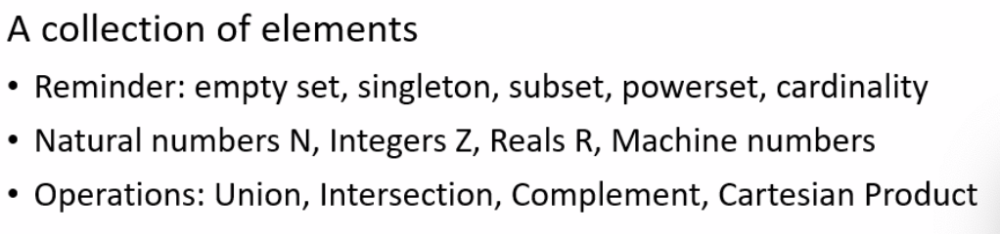

Formal Software Development Methods¶
约 1930 个字 1 张图片 预计阅读时间 6 分钟
Rice's theorem states that no algorithm can determine all non-trivial properties about the language recognized by a Turing machine (or any Turing-complete program), meaning it's impossible to know for any given program if it possesses an interesting behavioral characteristic, like whether it halts or accepts specific inputs, without running it (which might not even finish)
Set¶

Cartesian product 笛卡尔积
- If \(C = \{1, 5, 7\}\), \(B = \{2, 3, 5, 7\}\), then $\(C \times B = \{(1, 2), (1, 3), (1, 5), (1, 7), (5, 2), (5, 3), (5, 5), (5, 7), (7, 2), (7, 3), (7, 5), (7, 7)\}\)$
Difference
- \(A \setminus C\) consists of all elements that are in \(A\) but not in \(C\).
Powerset
- If \(A = \{1, 2, 4, 7\}\), \(C = \{1, 5, 7\}\), then the powerset of $\(A \cap C\)$ denoted as \(2^{A∩C}\) is $\(\mathcal{P}(A \cap C) = \left\{ \emptyset, \{1\}, \{7\}, \{1, 7\} \right\}\)$
Relation¶
| Property | Definition |
|---|---|
| Reflexive | If for every \(x \in \mathbb{Z}\), \((x, x) \in R\) |
| Symmetric | If \((x, y) \in R\) implies \((y, x) \in R\) |
| Transitive | If \((x, y) \in R\) and \((y, z) \in R\) implies \((x, z) \in R\) |
| Antisymmetric | If \((x, y) \in R\) and \((y, x) \in R\), then \(x = y\). |
- Equivalence: reflexive+symetric+transitive
- Partial order: reflexive+antisymmetric+transitive
- Preorder: reflexive+transitive
Binary Relation
Function¶
A particular input has a single output
Computations not a function?
Language¶
Alphabet, language, words
Regular expression
syntax+semantics
Simple imperative Programming language¶
Syntax->Graph¶
Graph(V, E)
Parse tree
Flow graph
DAG(Directed A~ Graph)
CFG(control flow graph)
- A CFG is a conservative approximation of the control flow
- The CFG is built using static analysis, meaning it only looks at the code's structure (syntax) without actually running it. It cannot always determine the actual values of variables during execution (semantics). It guarantees that no real execution path is ever missing, at the cost of including "fake" paths.
Basic Block
- Statements execute in sequence
Dynamic semantics
Binary Relations
Small step semantics¶
Interpreter¶
\([node, {var ↦ value}] → ⟨edge⟩ → [node, {var ↦ value}]\)
The {parameter↦value} part represents the current state of the program variables at a specific node.
(C, m) represents a "configuration" or "machine state," where C is the code remaining to be executed, and m is the current memory state.
The arrow --> represents exactly one step of computation. The program transforms from one state (C1, m1) to the next (C2, m2) until it reaches skip (which means "done"), leaving only the final memory m.
-->*: the transitive closure of the single-step arrow
- It is the "smallest transitive relation" connecting a starting state to any future state.
Example:if x > 5 then y := 2 + 3 else y := 3 + 4 fi
- Initial Memory (\(m\)):
{x -> 7}
- Evaluate Condition: The interpreter looks at
x > 5. It looks upxin memory (which is 7) and evaluates7 > 5totrue.- Transition: The code rewrites itself to:
if true then ...
- Transition: The code rewrites itself to:
- Branch Selection: Since the condition is
true, theifrule selects the first command (the "then" branch).- Transition: The code rewrites itself to just:
y := 2 + 3
- Transition: The code rewrites itself to just:
- Evaluate Expression: The assignment needs a value, not math. It calculates
2 + 3.- Transition: The code rewrites itself to:
y := 5
- Transition: The code rewrites itself to:
- Update Memory: Now that we have a simple assignment
y := 5, we update the memory.- Transition: The code becomes
skip(finished), and the memory becomes{x -> 7, y -> 5}.
- Transition: The code becomes
Big steps¶
Arithmetic Expressions (\(\langle a, \sigma \rangle \Downarrow v\) )
Commands (\(\langle c, \sigma \rangle \Downarrow \sigma'\))
- Assignment: $\({\langle x := a, \sigma \rangle \Downarrow \sigma}\)$
- Sequence:$\({\langle c_1; c_2, \sigma \rangle \Downarrow \sigma}\)$
- If/while: $\(\langle \textbf{if } b \textbf{ then } c_1 \textbf{ else } c_2, \sigma \rangle\)$
Par并行机制¶
The par (parallel) command allows two threads to run at the same time. The semantics rules state that at any step, the scheduler can essentially flip a coin to decide which side gets to run next. 两个线程可同时运行
Example1: $\(((Y := 1) \ \mathbf{par} \ (\text{while } Y = 0 \text{ do } X := X + 1), \ \{X \to 0, Y \to 0\})\)$
-
Initial x=0, y=0
-
Outcome A: The "Stop" Button works immediately
- Left side runs:
Y:= 1executes immediately. \(Y\) becomes 1. - Right side runs: The loop checks
while Y == 0. Since \(Y\) is now 1, the condition fails. The loop terminates. - Final State: \(X = 0, Y = 1\).
- Left side runs:
-
Outcome B: The "Loop" sneaks in a run
- Right side runs: The loop checks
while Y == 0. It is true. The bodyX:= X + 1runs. \(X\) becomes 1. - Left side runs:
Y:= 1executes. \(Y\) becomes 1. - Right side runs: The loop checks
while Y == 0. False. Terminate. - Final State: \(X = 1, Y = 1\).
- Right side runs: The loop checks
-
Outcome C: The "Loop" runs forever (or for a long time)
Because there is no rule forcing the Left side to run, the Right side could theoretically keep winning the "coin flip" 100 times, 1,000 times, or forever.
- Final State: \(X = \text{any integer } n \ge 0\).
Example2: Thread A: (await true protect l := 1 ; l := k + 1 end) par Thread B: (await true protect k := 2 ; k := l + 1 end)
How it executes: Since the condition is true for both, neither thread has to wait. However, the protect keyword forces Mutual Exclusion.
- Scenario A: If Thread A starts first, it must finish both
l := 1andl := k + 1before Thread B is allowed to touch anything. - Scenario B: If Thread B starts first, it must finish both
k := 2andk := l + 1before Thread A is allowed to start.
Comparison to previous slide: Without protect, the scheduler could interleave the lines like:
l := 1(Thread A)k := 2(Thread B)l := k + 1(Thread A)k := l + 1(Thread B)
With protect, this "mixing" is impossible. You only get "All of A then All of B" or "All of B then All of A." This prevents the unpredictable variables states we saw in the "Race Condition" example.
The Mechanism await B protect C end: \(\frac{(B, m) ⇓ (true, m1) (C, m1) ⇓ m′}{\text{(await B protect C end, m)} ⇓ m}\)
-
Wait (Synchronization): It halts execution until condition
Bbecomestrue.Protect (Atomicity): Once
Bis true, it executes the commandCas a single, uninterrupted block.- It uses the \(\Downarrow\) symbol (Big-Step semantics) for the body
C. This meansCruns from start to finish in one go, without the scheduler switching to another thread in the middle. 一次完成从头到尾运行，调度器不会切换到中间的另一个线程
- It uses the \(\Downarrow\) symbol (Big-Step semantics) for the body
Nondeterministic
- nondeterministic assignment
k := E1 [] E2 - Nondeterministically assigns one of the two evaluated values to x
S assert
Propositional logic¶
Syntax
semantic argument
boolean satisfiability
DPLL
- Core – Backtracking
Free and bound variables
Structures
Assignment
Interpretation Example
With quantifiers
Tautology
Coincidence Lemma (or the Principle of Local Determination)巧合引理 （或局部确定原则）
In simple terms, it says: "If a variable isn't used in a formula, its value doesn't matter." 简单来说，它说 ：“如果某个变量不被用于公式，它的值就无关紧要。”
Here is a breakdown of the notation and the two main rules: 以下是记谱法的解析和两条主要规则：
- The Setup 1. 设定
- \(a\) and \(b\) (Assignments): Think of these as two different memory states or "snapshots." They map variables to values (e.g., in state \(a\), \(x=5\); in state \(b\), \(x=10\)). \(a\) 以及 \(b\) （编制）： 可以把它们看作两种不同的记忆状态或“快照”。它们将变量映射到值（例如，状态 \(a\) ， ; \(x=5\) 状态 \(b\) ， \(x=10\) ）。
- \(fv(t)\) or \(fv(\psi)\): This stands for Free Variables. These are the variables that are actually "active" or "visible" in the term or formula (not bound by a quantifier like "for all" or "there exists"). \(fv(t)\) 或： \(fv(\psi)\) 这代表自由变量 。这些变量实际上是“活跃”或“可见”的（不受“对所有”或“存在”等量词限制）。
- The Two Rules 2. 两条规则
Rule 1: For Terms (Mathematical Expressions) 规则1：关于术语（数学表达式）
- Translation: If two memory states (\(a\) and \(b\)) agree on the variables that actually appear in the math expression \(t\), then the result of that expression will be the same in both states. 翻译： 如果两个内存状态（ \(a\) 和 \(b\) ）在数学表达式 \(t\) 中实际出现的变量一致，那么该表达式的结果在两个状态下将相同。
- Example: 示例：
- Term (\(t\)):
x + y(Free variables arexandy) 项 （ \(t\) ：x + y）（自由变量为x和y） - State \(a\):
x=1, y=2, z=100状态 \(a\) ：x=1，y=2，z=100 - State \(b\):
x=1, y=2, z=500状态 \(b\) ：x=1，y=2，z=500 - Result: Even though
zis different, the result ofx + yis3in both cases. The value ofzis irrelevant because it is not a free variable in \(t\). 结果： 尽管z不同，但 x+y的结果在两种情况下都是3。z的值无关紧要，因为它不是自由变量。 \(t\)
- Term (\(t\)):
Rule 2: For Formulae (Logical Statements) 规则2：对于公式（逻辑语句）
- Translation: This is the same logic, but for True/False statements. If the memory states agree on the relevant variables, the truth value of the statement remains the same. 翻译： 这也是同样的逻辑，但适用于真/假陈述。如果内存状态在相关变量上一致，则该陈述的真值保持不变。
- Example: 示例：
- Formula (\(\psi\)):
x > 10公式 （ \(\psi\) ：x > 10 - Since
yandzare not in the formula, changing them won't change whetherx > 10is true or false. 由于y和z不在公式中，改变它们不会改变x > 10是真还是假。
- Formula (\(\psi\)):
Why is this important? 这为什么重要？
This principle is critical for Modular Reasoning. It allows a program verification tool to say: "I am analyzing this specific function that only uses variables x and y. I can safely ignore the millions of other variables in the system (z, k, temp, etc.) because changing them won't affect my calculation."
这一原则对模块化推理至关重要。它允许程序验证工具说：“我正在分析这个只使用变量 x 和 y 的特定函数。我可以放心忽略系统中数百万个其他变量（z、k、温度等），因为更改它们不会影响我的计算。”
评论区~
有用的话请给我个赞和 star =>